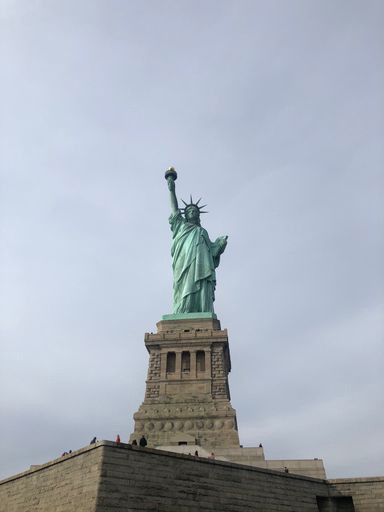
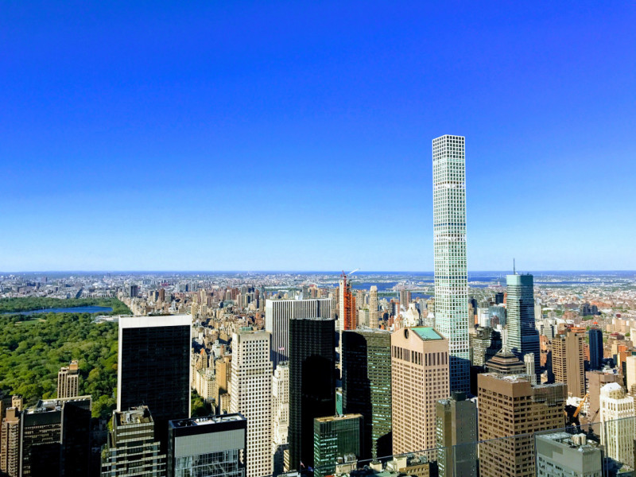

- 

- 
큰 꿈이 실현되고 눈부신 광경이 있는 뉴욕에서 현지인이 자주 방문하는 곳에 가보고 세계 최고의
피자를 맛보세요
초고층 빌딩, 최대 규모의 박물관, 가장 맛있는 피자가 있는 뉴욕은 최고의 도시입니다. 어느 것이든 그 기대에 부응합니다. 눈부신 브로드웨이의 광경에서 MoMA의 세계 정상급 갤러리, 소호의 부티크, 세계 각지의 요리를 맛볼 수 있는 다양한 레스토랑까지 뉴욕을 방문할 때마다 또 다른 모습을 발견할 수 있습니다. 하지만 이러한 상징적인 랜드마크 너머에서 뉴욕의 비밀스러운 면모가 펼쳐집니다. 몇 발짝만 가도 인디 빈티지 숍과 현지인이 이용하는 브런치 명소를 우연히 발견할 수 있습니다. 너무 많은 인파와 소리가 견딜 수 없을 때는 그냥 위를 올려다보세요. 그 스카이라인은 애초에 왜 뉴욕에 왔는지 상기시켜 줄 것입니다.